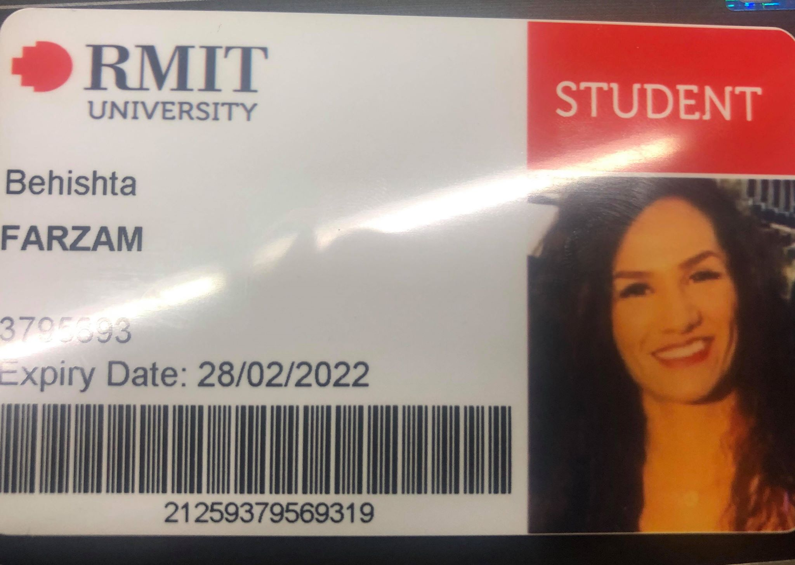

I am originally from Afghanistan and came to Australia six years ago. The main language spoken in Afghanistan is Dari and Pashto, both of which I can speak. I can also speak Hindi, which is the main language spoken in India, and Urdu, which is Pakistan’s main language, and of course English. ,
I have been married for four years and have a beautiful two-year-old daughter.
In my personal time, I love spending time with my family especially with my daughter, and exercising.
I have previously completed courses in the Dental and Health Science fields; qualifications from which I gained employment at a dental clinic where I currently work as a dental nurse.
example image
I chose to study information technology as I have a brother-in-law who works in the industry and I was inspired by the kind of work that he does. It is also a fast growing and demanding field and so should present a wide range of employment opportunities.
I chose to study with RMIT because I have previously studied here and had a great educational experience. It is also conveniently located as it is very close to where I live. I also have friends and relatives that are currently studying at RMIT and they are very happy with their experiences and have recommended and encouraged me to apply here.
I am currently studying two units from the first year of Bachelor of Information Technology which are Introduction to Programming and Introduction to Information Technology. I find these subjects are giving me a good understanding of IT in general, and by finishing these units I expect to be more competent with programming and IT.
Upon completion of this course and further education, I would like to work in the cyber security field. My ideal job would be a cyber security officer or specialist working in law enforcement, similar to the position described in the link below.
The job advertisement is for a cyber security role for a recruiter to work at a Federal Government organisation in Melbourne CBD. The duties of the role include providing desktop, application support and application whitelisting. The applicant must be able to deal with malware and anti-virus rollout and proxy restriction.
The location for this position would be ideal for me as it is close to where I live, allowing to manage my personal commitments. It is also expected that this role would have a typically higher salary given that it is a short-term role of only six months. Though not stated in the advertisement, there may be opportunity for the duration of the role to be extended.
To be successful, the applicant must have previous experience providing desktop and application support, a good understanding of information technology, and knowledge of IT security controls. They must also have excellent communication and stakeholder management skills, with the ability to work effectively in a team environment. Having a previous experience working in Government is also noted as being ‘highly favourable’ to ensure efficient integration and background knowledge of Government processes and systems. The applicant must be an Australian citizen.
I have successfully completed two courses in the English language when I initially arrived in Australia in 2013. This helped me to prepare for life in Australia, particularly in seeking employment and pursuing further studies. After gaining competence in English, I completed further Certificates and a Diploma (also at RMIT) in the health fields to support my part time employment role as a dental nurse.
I have been a dental nurse for five years now but over time I have realised that it’s not something that I want to continue to do, which is why I have commenced studying IT. I have always enjoyed working with computers and keeping up to date with the latest devices and technology in the industry. I would love the opportunity to further my skills, knowledge and experience to eventually find employment in the cyber security field.
To achieve my goal of finding employment in cyber security, I have to complete a Bachelor of Information Technology as a pathway to get into a Bachelor of Cyber Security course. After completing a degree in cyber security, I hope to be able to find a job as a cyber security officer or specialist. I would likely need some experience working in a related IT role prior to working in cyber security. This kind of experience I hope to find during the later years of my study.
paragraph
paragraph
paragraph
paragraph